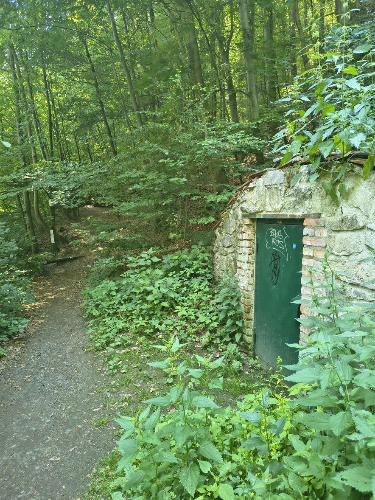

Chcete zjistit, jak vypadá ochrana přírody v praxi? Zveme studenty Mendelovy univerzity v Brně na celodenní terénní exkurzi do údolí Říčky v CHKO Moravský kras. Ve středu 14. října 2026 strávíte den s dobrovolnými strážci přírody a na vlastní kůži si vyzkoušíte, co jejich práce obnáší.
Údolí Říčky patří k nejnavštěvovanějším místům v okolí Brna. Právě tady je dobře vidět, jaký tlak na přírodu dokáže turismus vyvinout: sešlapané svahy, odpadky, rušení zvěře nebo vyšlapané zkratky mimo značené cesty. Dobrovolná stráž přírody pomáhá v takových místech hlídat přírodu, vysvětluje návštěvníkům, proč v chráněném území platí pravidla, a předchází škodám dřív, než vzniknou.
Během jednoho dne se seznámíte s tím, jak výkon stráže přírody vypadá doopravdy. Nejvíc prostoru dostane komunikace s návštěvníky a prevence negativních dopadů turismu, tedy dovednosti, které se v posluchárně naučit nedají. A pokud vás práce strážce chytne, ukážeme vám, jak se do ní můžete zapojit i dlouhodobě.
Základní informace
Kdy a kde
- středa 14. 10. 2026, přibližně 8:35 až 15:00
- údolí Říčky, okolí Hornku a Hádku
- sraz: Ochoz u Brna, obecní úřad
- trasa přibližně 10 km
Pro koho a s kým
- 40 studentů Mendelovy univerzity v Brně
- dvě skupiny po 20 lidech
- průvodci: Antonín Tůma a Radovan Mezera, dobrovolní strážci přírody
Jak bude den probíhat
Po příjezdu do Ochozu u Brna se rozdělíme do dvou skupin. Jedna vyrazí pod Hornek, druhá směrem na Hádek, a každou povede jeden ze strážců. Přibližně v polovině dne se skupiny na místě srazu vystřídají, takže si všichni projdou obě části programu. Počítáme s přestávkou na vlastní studený oběd a na závěr se krátce společně ohlédneme za tím, co jste během dne zjistili.
Co si vyzkoušíte
- terénní monitoring a drobné úpravy návštěvnické infrastruktury
- fotodokumentaci stop nevhodného chování v přírodě
- komunikaci s návštěvníky v roli dobrovolného strážce přírody
- krátké dotazování návštěvníků ve dvojicích podle zadání
- práci s mapou a orientaci v terénu
- vypracování zprávy z průzkumu
Doprava
Cesta tam, autobus 201
- 8:09 Brno, Židenice, nádraží
- 8:15 Brno, Stará osada, stanoviště 7
- 8:35 Ochoz u Brna, obecní úřad
Cesta zpět, autobus 201
- 14:59 Ochoz u Brna, U Votrubů
Co s sebou
Pevnou obuv a oblečení do lesa, které se může ušpinit a odpovídá předpovědi počasí. Dále pracovní rukavice, čelovku, dostatek pití, svačinu a vlastní studený oběd, psací potřeby a nabitý telefon na fotodokumentaci.
O projektu
Exkurze je jedním ze tří celodenních setkání studentů s dobrovolnou stráží přírody CHKO Moravský kras, která připravuje projekt „Ochrana cenných ekosystémů a řízení udržitelné turistiky v okolí Brna". Projekt je realizován s finanční podporou v rámci Programu Švýcarsko-české spolupráce. Realizátorem je Atregia s.r.o. ve spolupráci s Mendelovou univerzitou v Brně, ASITIS s.r.o., KAVYL, spol. s r.o. a švýcarským partnerem WSL.
Podpořeno švýcarským příspěvkem na snižování hospodářských a sociálních rozdílů v EU.

Chcete vědět víc?
Přečtěte si, jak projekt pracuje s návštěvností Moravského krasu a proč vzniká Plán udržitelného turismu.